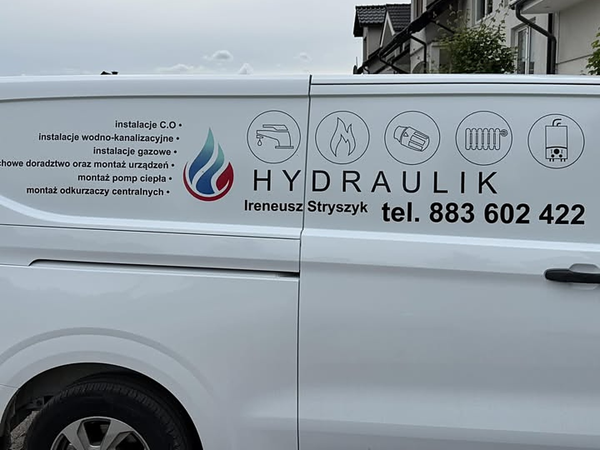

20 lat doświadczenia w branży.

Instalacje C.O, wodno-kanalizacyjne, gazowe i ogrzewania podłogowego to dla nas codzienność. Jeśli oczekują Państwo fachowego doradztwa w tych sprawach, wykonania od A do Z, wykonania w ustalonym terminie oraz wyceny, po której mają Państwo pewność, ile instalacja będzie kosztować i że wszystko będzie działać jak należy, są Państwo w odpowiednim miejscu.
Pracujemy w Chojnicach i okolicy, a przy większych inwestycjach dojeżdżamy w promieniu 100 km. Jesteśmy autoryzowanym wykonawcą marki Vaillant w zakresie montażu i serwisu kotłów gazowych oraz pomp ciepła.
Skontaktuj się z nami →


Bez zobowiązań. Proszę opisać zakres prac, a my doradzimy i wycenimy.